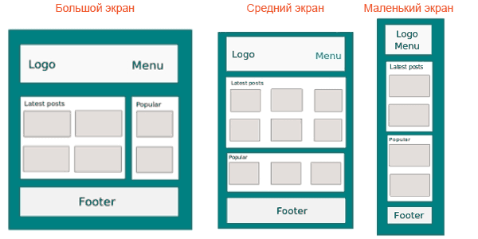

Адаптивный дизайн с Gulp
Нажмите сюда, чтобы просмотреть демо-версию и лучше понять, что мы собираемся делать.
Предварительно позвольте мне рассказать вам немного о Susy и Breakpoint.
Susy
Susy является системой сеток, которая предоставляет большую гибкость для управления макетом сайта. Susy даёт вам всё, чего не может дать ни один другой фреймворк, вроде Bootstrap или Foundation. У меня не найдётся прекрасных слов для описания мощи Susy; есть пост Целла Лью на css-tricks, представляющий Susy и рассказывающий насколько легко вы можете создать с его помощью макет.
Позвольте показать немного того, как можно использовать Susy для определения макета. Susy работает с Sass, не Less и это также настраивается. Вот простая и минималистская настройка, которая у вас может быть:
@import "susy"
/* Меняем глобальные настройки Susy по умолчанию */
$susy: (
/* Устанавливаем 12 колонок */
columns: 12,
/* Устанавливаем основной контейнер в 1120px */
container: 1024px
);Теперь предположим, что вам нужен макет страницы подобно текущей, на которой вы читаете этот текст. Страница содержит заголовок, который охватывает весь макет, контент слева занимает 8 колонок и боковая панель занимает 4 колонки. Написать с Susy вы можете так:
header{
@include span(12);
}
.content{
@include span(8);
}
.content{
@include span(4);
}Просто, не так ли? Никакого лишнего шума.
Breakpoint
Без медиа-запросов нет и адаптивного дизайна. Breakpoint является простым модулем, который позволяет использовать медиа-запросы упрощённым и наглядным путём. Он предназначен для помощи в написании медиа-запросов в Sass так быстро, насколько это возможно. Давайте посмотрим пример применения:
header{
@include breakpoint( 320px ){
background-color: $white;
}
@include breakpoint( 768px ){
background-color: $red;
}
@include breakpoint( 1024px ){
background-color: $black;
}
}Здесь просто меняется цвет фона заголовка каждый раз, когда размер экрана попадает в одну из точек останова. Это просто. Представив как это сочетается с Susy, мы собираемся творить магию.
Прочитать больше о breakpoint-sass можно здесь.
Макет проекта
Прежде чем идти дальше, позвольте мне показать вам что мы действительно хотим здесь сделать в качестве примера:

Я думаю вы поняли смысл. Хотя эта концепция может быть просто названа эластичным макетом, я думаю, что в нашем случае правильно иллюстрировать то, что мы хотим получить. Если вы хотите сделать полностью отзывчивый дизайн, то должны обдумать несколько элементов, вроде смены меню, добавления/удаления элементов дизайна на основе размера экрана и др.
Настройка проекта
Для этого проекта мы будем использовать систему сборки Gulp для автоматизации некоторых наших задач. И мы будем также использовать Bower для управления нашими пакетами, такими как Susy, Breakpoint. Итак, начнём.
Шаг 1: создайте папку и назовите её responsive_blog или любым предпочитаемым именем.
Шаг 2: перейдите в папку и запустите npm init, чтобы настроить файл package.jason. Скажите yes для всех шагов.
Шаг 3: установите Gulp локально путём выполнения npm install --save-dev gulp.
Шаг 4: также установите локально следующие плагины — gulp-sass, gulp-minify, gulp-uglify, gulp-rename, gulp-del, browser-sync и др., запустив npm install --save-dev <имя плагина> или можете просто указать их как зависимости в файле package.json:
"devDependencies": {
"browser-sync": "^2.9.0",
"del": "^2.0.0",
"gulp-autoprefixer": "^2.3.1",
"gulp-minify-css": "^1.2.1",
"gulp-plumber": "^1.0.1",
"gulp-rename": "^1.2.2",
"gulp-sass": "^2.0.4",
"gulp-sourcemaps": "^1.5.2"
}Шаг 5: создайте ещё одну папку внутри responsive_blog и назовите её src. Она будет содержать наши исходные файлы. Чтобы сделать папку вы можете выполнить: mkdir src.
Шаг 6: создайте файл bower.json запустив bower init и сказав yes для всех шагов. Затем выполните bower install susy breakpoint. Это позволит установить пакеты Bower, в частности Susy и Breakpoint-sass.
Шаг 7: создайте gulpfile.js в той же папке, запустив touch gulpfile.js.
Ваша папка проекта должна выглядеть следующим образом:
- responsive_blog/
- node_modules/
- src/
- bower_components
- bower.json
- gulpfile.js
- package.json
Если это выглядит красиво, то продолжим.
Шаг 8: перейдите в папку src и создайте основной файл, запустив touch index.html.
Шаг 9: создайте две папки css и scss внутри src запустив mkdir css scss.
Шаг 10: внутри scss создайте новый файл и назовите его styles.scss. Сейчас папка должна выглядеть следующим образом:
- responsive_blog/
- node_modules/
- bower_components/
- src/
- css/
- index.html
- scss/
- styles.scss
- bower.json
- gulpfile.js
- package.json
Отличная работа!
Код
Мы только что создали наши папки и файлы. Теперь добавим некоторый код внутрь index.html, gulpfile.js и styles.scss:
index.html
<!DOCTYPE html>
<html>
<head>
<title>Responsive Web Design - Blog</title>
<meta name="charset" content="UTF-8">
<meta name="viewport" content="width=device-width,initial-scale=1.0, maximum-scale=1.0">
<link rel="stylesheet" type="text/css" href="css/styles.min.css">
</head>
<body>
<div class="container">
<header class="">
<h2><a href="" title="">RWD</a></h2>
<nav>
<ul>
<li><a href="" title="">Home</a></li>
<li><a href="" title="">About</a></li>
<li><a href="" title="">Contact</a></li>
</ul>
</nav>
</header><!-- /header -->
<div class="page-content">
<section class="latest-posts">
<h1>Latest tutorials</h1>
<article>
<!-- пост блога -->
<h2><a href="" title="">How to create a blog?</a></h2>
<p>This shows you how you can create your own blog.
<a href="" rel=bookmark>Read more</a></p>
<footer>
By zooboole | 7k views
</footer>
</article>
<article>
<!-- пост блога -->
<h2><a href="" title="">How to create a blog?</a></h2>
<p>This shows you how you can create your own blog.
<a href="" rel=bookmark>Read more</a></p>
<footer>
By zooboole | 7k views
</footer>
</article>
</section><!-- /section -->
<aside class="popular-posts">
<h1>Popular</h1>
<article>
<!-- пост блога -->
<h2><a href="" title="">How to create a blog?</a></h2>
<p>This shows you how you can create your own blog.
<a href="" rel=bookmark>Read more</a></p>
<footer>
By zooboole | 7k views
</footer>
</article>
</aside><!-- /aside -->
</div>
<footer class="footer">
2015 © Responsive Blog, by <a href="http://zooboole.me">zooboole</a>
</footer><!-- /footer -->
</div>
<script src="bower_components/jquery/dist/jquery.js" type="text/javascript" charset="utf-8"></script>
<script src="bower_components/breakpoint/jquery.breakpoint.js" type="text/javascript" charset="utf-8"></script>
</body>
</html>styles.scss
@import "../bower_components/susy/sass/_susy.scss";
@import "../bower_components/breakpoint-sass/stylesheets/breakpoint";
@import "reset";
@import "variables";
// Susy
$susy: (
columns: 12,
gutters: 1/2,
math: fluid,
gutter-position: outside,
);
html,body{
font-family: $font-family-default;
font-size:$font-size-default;
line-height:$line-height;
color:$color-text;
background-color: $color-background;
margin:0;
padding:0;
overflow-x:hidden;
}
a{
text-decoration: none;
}
.container{
@include container($container);
background-color:$white;
}
.page-content{
padding:3%;
margin:0;
}
// ***********************************
// МАЛЕНЬКИЕ УСТРОЙСТВА
// ***********************************
@include breakpoint($breakpoint-small) {
h1{
color: $color-secondary;
font-size: $font-size-title;
}
h2{
font-size: 1.2em;
margin:0;
padding:0;
}
// Заголовок сайта
header{
@include span(12);
background-color:$color-secondary;
padding:0 1%;
color: $white;
h2{
@include span(12);
font-size: 1.5em;
padding:0 0.4em;
}
nav{
@include span(12);
}
ul{
list-style-type: none;
padding:0;
margin:0;
padding-left:0.1em;
li{
display: inline-block;
a{
font-size: 1em;
display: block;
padding: 0.5em;
}
}
}
a{
color: $white;
&:hover{
color: $black;
}
}
}
// Последние посты
.latest-posts{
@include span(12);
article{
border:1px solid $color-background;
padding:0.5em;
margin-bottom: 1em;
p{
font-size: 0.9em;
}
a{
color: darken($color-background, 25%);
}
footer{
font-size: 0.9em;
color:#333;
}
}
}
// Популярные посты
.popular-posts{
@include span(12);
article{
background-color:lighten($color-background, 5%);
border:1px solid $color-background;
padding:0.5em;
margin-bottom: 1em;
a{
color: darken($color-background, 20%);;
}
}
}
// Подвал
.footer{
@include span(12);
background-color:$color-secondary;
font-size: 1em;
padding:0.5em 1%;
color: $white;
a{
color:lighten( $color-primary, 22%);
&:hover{
color: $black;
}
}
}
}
// ***********************************
// СРЕДНИЕ УСТРОЙСТВА
// ***********************************
@include breakpoint($breakpoint-medium){
// Здесь мы просто изменим что необходимо модифицировать,
// потому что предыдущий стиль применяется автоматически
// Заголовок сайта
header{
@include span(12);
background-color:$color-primary;
h2{
@include span(3);
font-size: 3em;
}
nav{
@include span(8);
}
ul{
text-align: right;
margin-top:0.4em;
li{
a{
font-size: 1.7em;
}
}
}
}
// Последние посты
.latest-posts{
@include span(6);
article{
h2{
font-size: 1.8em;
}
border:1px solid $color-background;
padding:0.5em;
margin-bottom: 2em;
clear: both;
p{
font-size: $font-size-default+50;
}
a{
color: darken($color-background, 25%);
}
footer{
font-size: 1.3em;
}
}
}
// Популярные посты
.popular-posts{
@include span(6);
padding-left:1em;
article{
h2{
font-size: 1.8em;
}
background-color:lighten($color-background, 2%);
border:1px solid transparent;
padding:0.5em;
margin-bottom: 1em;
p{
font-size: $font-size-default+50;
}
a{
color: darken($color-background, 20%);;
}
footer{
font-size: 1.3em;
}
}
}
// Подвал
.footer{
@include span(12);
background-color:$color-primary;
font-size: 1.5em;
}
}
// ***********************************
// БОЛЬШИЕ УСТРОЙСТВА
// ***********************************
@include breakpoint($breakpoint-large){
// Здесь мы просто изменим что необходимо модифицировать,
// потому что предыдущий стиль применяется автоматически
// Заголовок сайта
header{
@include span(12);
background-color:lighten($color-primary, 15%);
padding:0%;
}
// Последние посты
.latest-posts{
// оставим пустым, это значит что будет применяться предыдущий стиль
}
// Популярные посты
.popular-posts{
@include span(6);
padding-left:1em;
article{
h2{
font-size: 1.8em;
}
background-color:lighten($color-background, 2%);
border:1px solid transparent;
padding:0.5em;
margin-bottom: 1em;
p{
font-size: $font-size-default+50;
}
a{
color: darken($color-background, 20%);;
}
footer{
font-size: 1.3em;
}
}
}
// Подвал
.footer{
padding:0em;
background-color:lighten($color-primary, 15%);
}
}gulpfile.js
//////////////////////////////////////////////////
//
// Включаем задачи
//
/////////////////////////////////////////////////
var gulp = require('gulp'),
minifycss = require('gulp-minify-css'),
sass = require('gulp-sass'),
browserSync = require('browser-sync'),
reload = browserSync.reload,
autoprefixer = require('gulp-autoprefixer'),
plumber = require('gulp-plumber'),
del = require('del'),
rename = require('gulp-rename'),
sourcemaps = require('gulp-sourcemaps');
//////////////////////////////////////////////////
//
// Настройка переменных
// Задаём paths
//
/////////////////////////////////////////////////
var config = {
scss :[ 'src/scss/**/*.scss' ],
css :[ 'src/css/' ],
html :[ 'src/**/*.html' ],
build :[ 'build/' ],
src :[ 'src/' ]
};
//////////////////////////////////////////////////
//
// Задачи для CSS/Sass
//
/////////////////////////////////////////////////
gulp.task('styles',function(){
return gulp.src(config.scss)
.pipe(sourcemaps.init())
.pipe(sass()
.on('error', sass.logError))
.pipe(autoprefixer('last 3 versions'))
.pipe(minifycss())
.pipe(rename({suffix: '.min'}))
.pipe(sourcemaps.write())
.pipe(gulp.dest(''+config.css+''))
.pipe(reload({stream:true}));
});
//////////////////////////////////////////////////
//
// Задачи для HTML
//
/////////////////////////////////////////////////
gulp.task('html', function(){
return gulp.src(config.html)
.pipe(reload({stream:true}));
});
//////////////////////////////////////////////////
//
// Задачи Browser-Sync
//
/////////////////////////////////////////////////
gulp.task('browserSync', function() {
browserSync({
server: {
baseDir: config.src
}
});
});
//////////////////////////////////////////////////
//
// Задачи сборки
// Создание папки build, очистка неиспользуемых файлов и папок
//
/////////////////////////////////////////////////
// Создание
gulp.task('build:create', function(){
return gulp.src(config.src+'**/*')
.pipe(gulp.dest(''+config.build+''));
});
// Очистка папки build
gulp.task('build:clean',['build:create'], function(){
return del(['build/bower_components/',
'build/scss/',
'build/css/!(*.min.css)',
'build/js/!(*.min.js)'
]);
});
// Задачи предварительного просмотра приложения
gulp.task('build:start', function() {
browserSync({
server: {
baseDir: config.build
}
});
});
// Удаляем папку build
gulp.task('build:delete', function(res){
return del([config.build+'/**'], res);
});
// Задача build
gulp.task('build', ['build:create', 'build:clean']);
//////////////////////////////////////////////////
//
// Задача watch
// Отслеживает любые изменения в файлах CSS, JS и HTML
//
/////////////////////////////////////////////////
gulp.task ('watch', function(){
gulp.watch(config.scss, ['styles']);
gulp.watch(config.html, ['html']);
});
//////////////////////////////////////////////////
// Задача по умолчанию
/////////////////////////////////////////////////
gulp.task('default', ['watch', 'browserSync','styles','html']);Хорошо. Мы разработали разные части проекта. Осталось только запустить их. Как вы, возможно, заметили из gulpfile.js, мы просто должны поставить свои задачи в работу.
Здесь следует рассмотреть два случая:
Разработка
Это время, когда вы всё ещё кодируете и вносите изменения в код. В нашем случае достаточно просто выполнить:
gulpЕсли вы используете мои файлы, выполните следующее:
npm install
bower install
gulpПри этом скачаются все плагины и требуемые пакеты, после чего gulp выполнит задачи, которые отслеживают любые изменения и автоматически перезагружают страницу.
Если вы хотите увидеть, как я получил пути к Susy и Breakpoint запустите bower list --path.
Но есть кое-что с точками останова, о чём мне следует предупредить. Вы должны использовать breakpoint-sass вместо breakpoint. При импорте его в ваши стили будьте аккуратны.
Публикация
Этап, когда вы закончили кодирование и хотите получить конечный продукт. У нас есть задачи build. Чтобы их использовать, выполните следующие команды.
Создание сборки приложения:
gulp buildЗапустить финальное приложение:
gulp build:startЕсли вы хотите удалить папку build:
gulp build:deleteРезюме
Это просто пример того, как я бы приступил к созданию такого сайта. Это лишь один рабочий процесс и техника среди множества. Я ожидаю что вы узнали четыре основные вещи из этого урока: рабочий процесс с системой сборки Gulp, как создать адаптивный сайт, как Susy и Breakpoint позволяет нам писать семантичный HTML и как указать сперва мобильные устройства при проектировании адаптивного сайта.
Признаю, что пропустил много в коде, знайте что это для ясности цели, а иногда я сам не разобрался, как обращаться с этим, потому что всё ещё учусь, как хорошо использовать Susy и Breakpoint. Если у вас есть какие-либо идеи как что-то улучшить, я буду рад принять их.
Прежде всего, вы также должны быть осведомлены о существования Susy и Breakpoint для вашего следующего проекта. Это великолепные инструменты, которые могут сделать вашу жизнь проще.